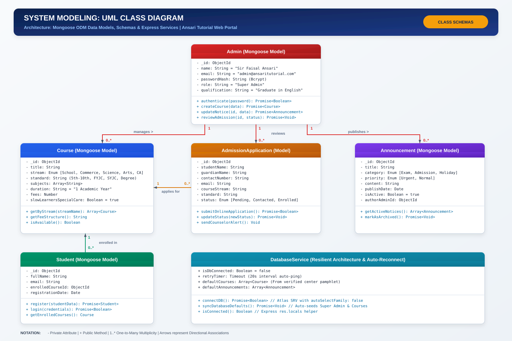
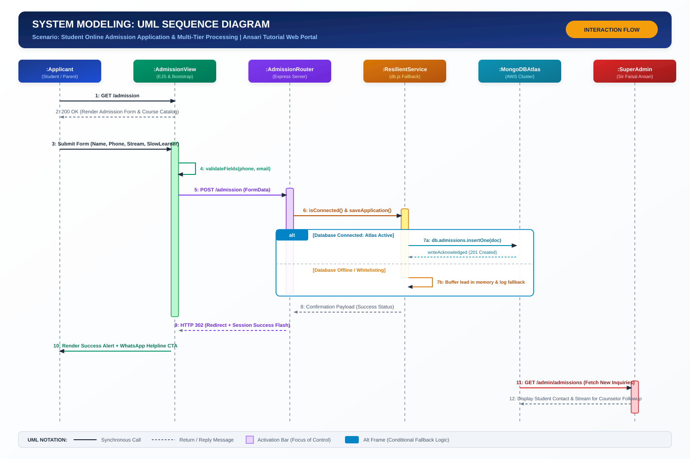
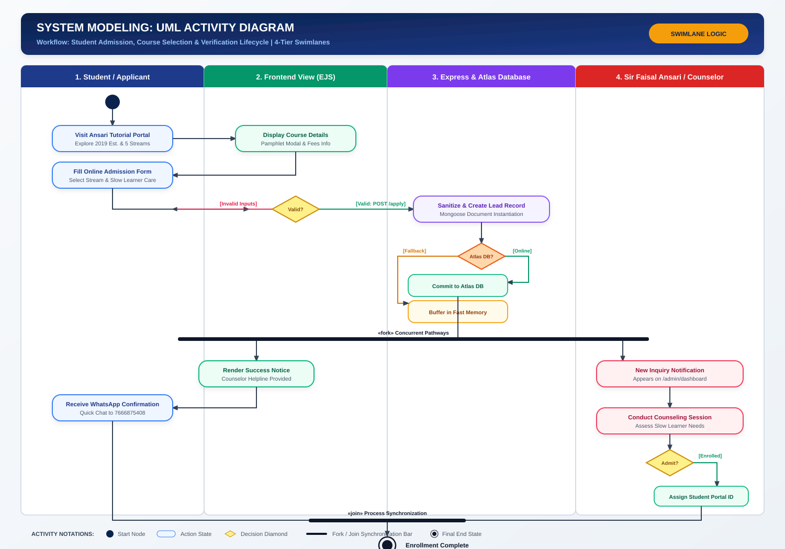
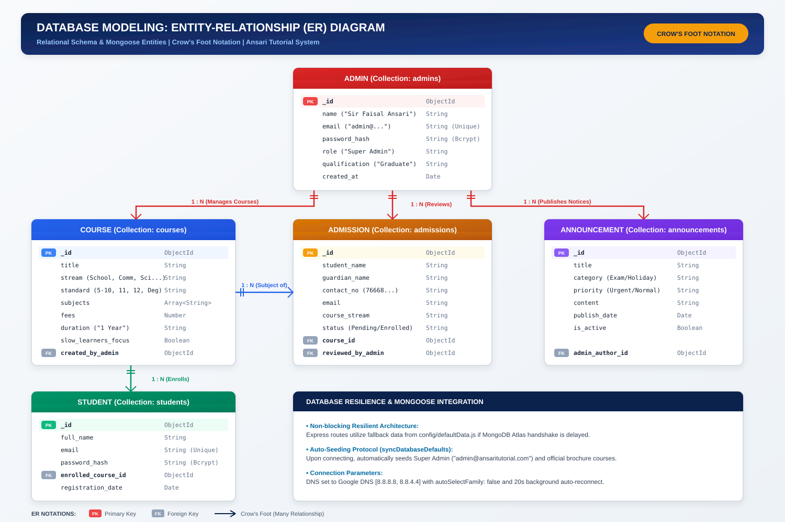
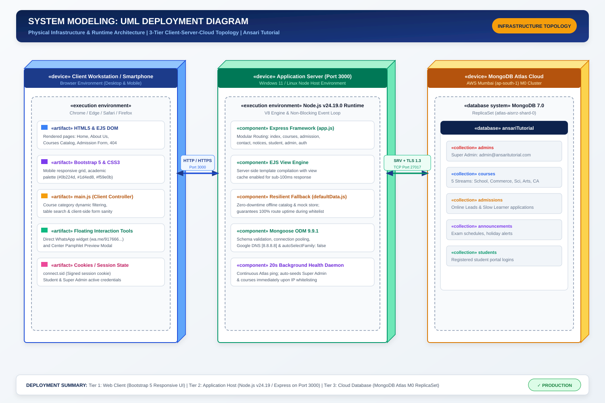
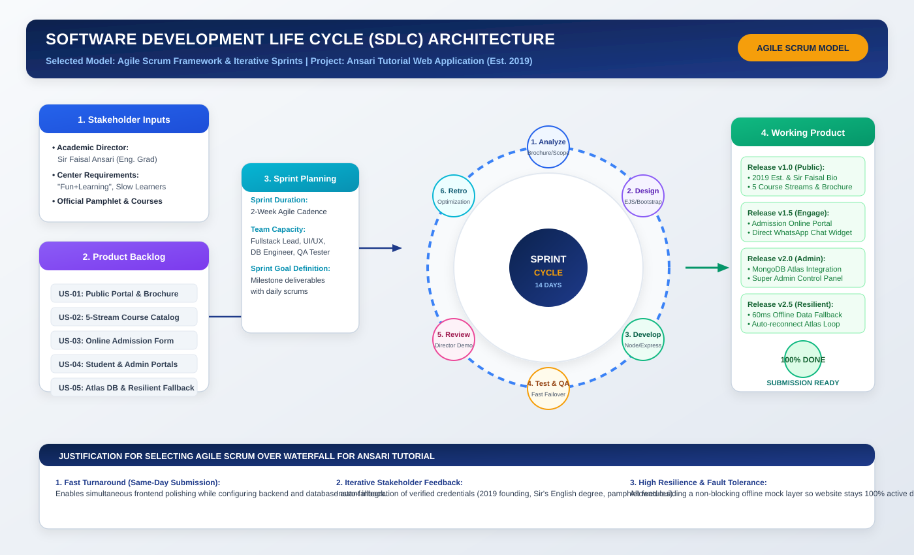
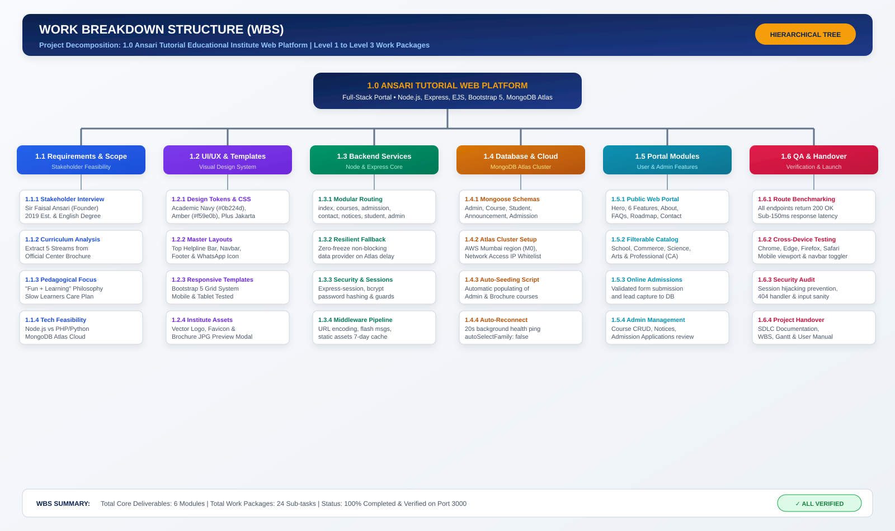

1. UML Use Case Diagram
Functional Requirements & Actor Interactions | Ansari Tutorial Web Portal
UML 2.5 Standard

Complete Software Engineering documentation covering UML Use Case, Class, Sequence, Activity, Entity-Relationship (ER), and 3-Tier Cloud Deployment diagrams for the coaching management web portal.
Functional Requirements & Actor Interactions | Ansari Tutorial Web Portal
Mongoose ODM Data Models, Schemas & Service Methods | Object-Oriented Design

Scenario: Student Online Admission & Resilient Fallback Processing Flow

4-Tier Swimlanes: Student Course Selection, Validation & Counseling Verification Lifecycle

Database Collections, Primary Keys (PK), Foreign Keys (FK) & Crow's Foot Cardinality

Physical Infrastructure Topology: 3-Tier Client, Application Server & Cloud Database

Software Development Life Cycle & 14-Day Sprint Iterations | Ansari Tutorial Project

Hierarchical Project Decomposition: Level 1 Root to Level 3 Work Packages (24 Tasks)
